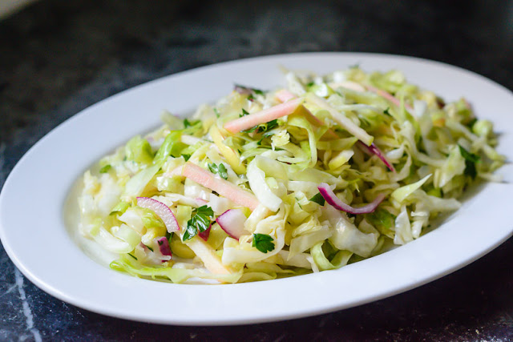

Homepage
Bright Cabbage Slaw

This light and clean slaw will give a breath of freshness on any plate.
Ingredients
- 1/2 Head of red or green cabbage
- 1/2 Red onion, thinly slice
- 55ml Lemon Juice
- Salt
- 15g chopped parsley
- 3 tablespoons red wine vinegar
- 6 tablespoons extra-virgin olive oil
Recipe
Preparing the cabbage
- Quarter the cabbage through the core, using a sharp knife to cut the core out at an angle
- Thinly slice the cabbage cross wise and place in a colander
- Season the cabbage with a pinch of salt to draw out the water, and set aside.
Preparing the onion
- In a small bowl, place the sliced onion with the lemon juice and set aside for 20 minutes to macerate
Preparing the salad
- Drain away the water in the cabbage, and place it back in the same bowl
- Add the parsley and macerated onions to the cabbage. (make sure not to add the lemon juice just yet)
- Dress the onion, cabbage and parsley mix with red wine vinegar and olive oil and toss well to combine
- Taste the salad and adjust by adding salt and lemon juice as needed
Enjoy!!
`